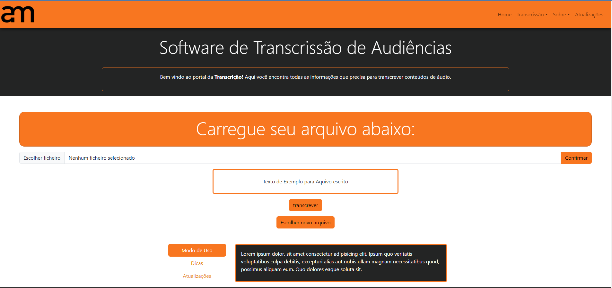
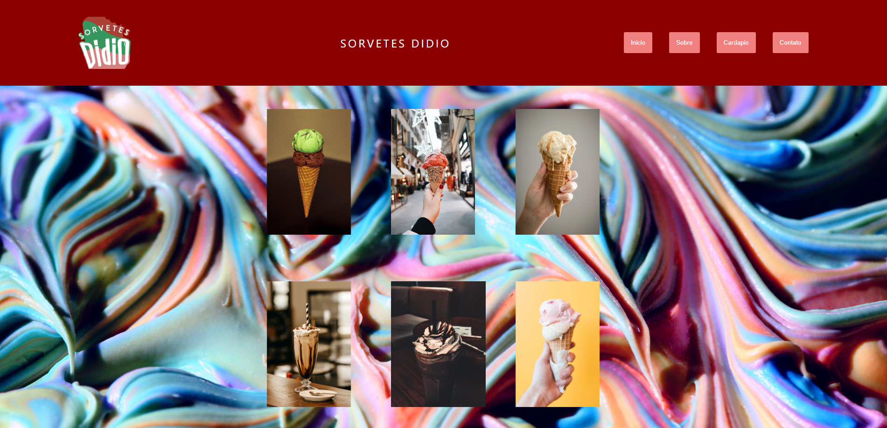
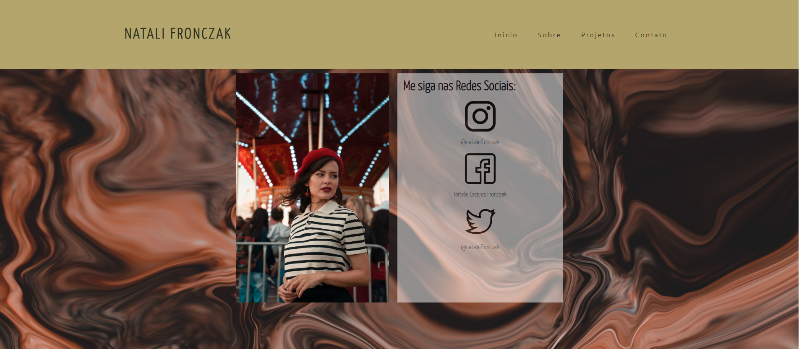

Front-End Developer


About
I am a dedicated professional with a primary focus on the development of web applications, specializing in creating tailored layouts. Currently, I am pursuing a bachelor's degree in Information Systems at the University of Vale do Rio dos Sinos to enhance and refine my skills as a developer, aiming to contribute effectively to the ever-evolving field of technology.
The technologies on which I am currently engaged

Bootstrap
React
Javascript

Angular

HTML5
CSS3
Projects
This project was developed in collaboration with my colleagues, where we created a customized transcription tool for the work environment.
This was one of my initial projects, which I had the opportunity to develop for a local business. The objective was to create a website capable of conducting marketing efforts to attract new customers.
This project, on the other hand, aimed to boost followers for a model on social media. It showcased her statistics and the projects she was involved in, further enhancing her career
*You can follow these and other projects more closely on GitHub, where I keep all the codes I am working on regularly updated.